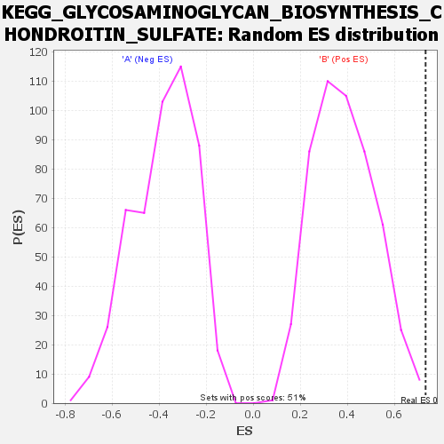

| | | Dataset | my.my.cls#B_versus_A.my.cls#B_versus_A_repos |
| Phenotype | my.cls#B_versus_A_repos |
| Upregulated in class | B |
| GeneSet | KEGG_GLYCOSAMINOGLYCAN_BIOSYNTHESIS_CHONDROITIN_SULFATE |
| Enrichment Score (ES) | 0.7327219 |
| Normalized Enrichment Score (NES) | 1.9001868 |
| Nominal p-value | 0.0019646366 |
| FDR q-value | 0.5365666 |
| FWER p-Value | 0.172 |
Table: GSEA Results Summary
Fig 1: Enrichment plot: KEGG_GLYCOSAMINOGLYCAN_BIOSYNTHESIS_CHONDROITIN_SULFATE
Profile of the Running ES Score & Positions of GeneSet Members on the Rank Ordered List
 Fig 2: KEGG_GLYCOSAMINOGLYCAN_BIOSYNTHESIS_CHONDROITIN_SULFATE
Fig 2: KEGG_GLYCOSAMINOGLYCAN_BIOSYNTHESIS_CHONDROITIN_SULFATE
Blue-Pink O' Gram in the Space of the Analyzed GeneSet

Fig 3: KEGG_GLYCOSAMINOGLYCAN_BIOSYNTHESIS_CHONDROITIN_SULFATE: Random ES distribution
Gene set null distribution of ES for KEGG_GLYCOSAMINOGLYCAN_BIOSYNTHESIS_CHONDROITIN_SULFATE